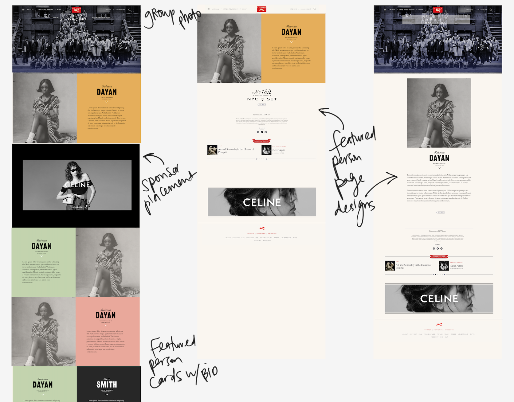

AIR MAIL is a digital media startup, launched by former Vanity Fair editor-in-chief Graydon Carter.
Downtown Issue
OVERVIEW
(2022)
This special "Downtown" issue highlighted 50
influential New Yorkers in the arts and culture space, living and
working in Lower Manhattan.
The goal was to find a simple way to create a snap grid effect, similar to the animation used in The New York Times' Best Actors of 2021 issue. I served as the Front-End Lead on this project and collaborated with the design team to develop ideas for the page design.
Inspiration

Ideation

Live Site